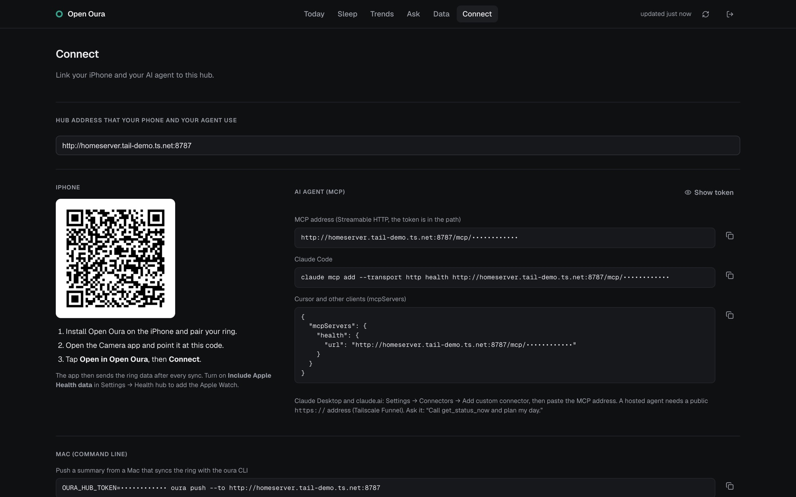
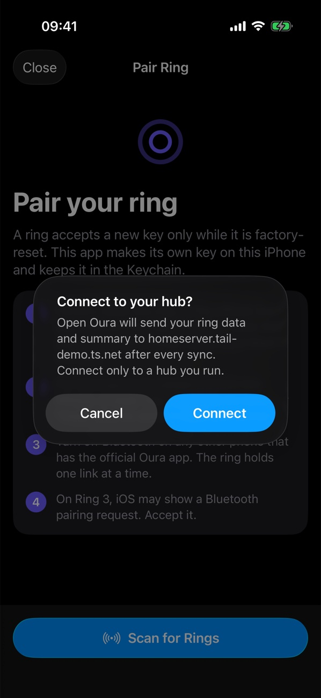

Set up Open Oura, from a clean Mac to your ring on your iPhone.
Five parts, in this order. You need only the first two: the app and the ring. The hub, the agent, and Oura's sleep models are optional. Plan about 30 minutes for the first two parts. Most of that time is the first build and the ring reset.
What you need
For the app
- A Mac with Xcode 26 or newer
- An iPhone with iOS 17 or newer, and its cable
- An Apple ID. A free one works, and the app then runs for 7 days per install.
For the ring
- An Oura Ring 3, 4, or 5
- Its charger
- About 15 minutes for the reset and the first sync
For the hub
- A computer that stays on: a Linux server, a Steam Deck, or a Mac
- Docker or podman on it
- A free Tailscale account on the server and the iPhone
The official Oura app and Open Oura cannot share one ring. The setup resets the ring, so sync it in the official app one last time before you start.
Install the app
One script builds the app and puts it on your iPhone. On your Mac, with the iPhone on its cable, about 20 minutes.
Add your Apple ID to Xcode
Open Xcode → Settings → Accounts, click +, and sign in with your Apple ID. A free Apple ID works. You can also set up the iPhone of a family member: your Apple ID signs the app, and Xcode adds that iPhone to your Apple team.
Connect the iPhone and trust this Mac
Connect the iPhone with its cable and unlock it. When the iPhone shows Trust This Computer?, tap Trust and enter the passcode.
If no prompt comes, unplug the cable, unlock the iPhone, and plug it in again.
Turn on Developer Mode
The Developer Mode switch shows only after a Mac with Xcode connects to the iPhone once. Do this step after you trust the Mac.
- Keep the iPhone unlocked on the cable. In Xcode, open Window → Devices and Simulators, and wait until the iPhone shows in the list.
- On the iPhone, close Settings fully: swipe it away in the app switcher.
- Open Settings → Privacy & Security. Scroll to the Security section at the bottom. Turn on Developer Mode and tap Restart.
- After the restart, unlock the iPhone. Tap Turn On in the alert and enter the passcode.
Run the install script
The script installs
xcodegenand Rust when they are missing, builds the app, finds your Apple team and your iPhone, then installs and opens the app.git clone https://github.com/KenWuqianghao/open_health.git cd open_health ./apps/ios/install.sh --check # checks the tools, the team, and the iPhone ./apps/ios/install.sh
The first build takes about 10 minutes. Keep the iPhone unlocked, with the screen on, until the app opens. The Mac must load developer files onto the iPhone, and iOS allows this only while the iPhone is unlocked.
If Settings → Display & Brightness → Auto-Lock is grey, Low Power Mode is on. Touch the screen from time to time, or turn off Low Power Mode and set Auto-Lock to Never.
With two iPhones connected, pick one by its name or its ID:
DEVICE="Ana's iPhone" ./apps/ios/install.sh.Trust the app on the iPhone
The first time, iOS installs the app but does not let it open. On the iPhone, open Settings → General → VPN & Device Management. Tap Apple Development: your Apple ID, then tap Trust. Then open Open Oura from the Home Screen.
Also turn on Settings → General → Background App Refresh for Open Oura.
Renew it every 7 days
With a free Apple ID, the app stops opening 7 days after the install. Write down the date. Before that day, connect the iPhone, unlock it, and run
./apps/ios/install.shagain. Your data stays on the iPhone. With a paid Apple Developer account, one install lasts a year.
Free the ring and pair it
A ring accepts a new key only after a factory reset. With the ring, its charger, and the iPhone, about 15 minutes.
Sync one last time, then remove the official app
Open the official Oura app and sync one last time. The reset erases all data on the ring that is not synced yet. Then delete the official Oura app from the iPhone.
Open Settings → Bluetooth. If the ring is under “My Devices”, tap its info button and tap Forget This Device. An old pairing makes every connection fail.
Reset the ring on its charger
This works on the Ring 3 and Ring 4 charging dock, which has no button. You do the reset when you turn the dock over.
- Connect the dock to power. If the ring is on the dock, take it off.
- Put the ring on the dock and wait about 2 seconds. Do not wait longer.
- Turn the dock, with the ring on it, over and back until each light shows:
Upside down, until blueRight side up, until redUpside down, until purpleRight side up, until yellowYellow means that the reset started. After a few minutes the light blinks blue: the reset is done. If a color does not come, take the ring off the dock and start again.
Do not set the ring up in the official app again. That installs Oura's key and locks Open Oura out, and you must do the reset again.
A Ring 5, or a charging case with a button, needs different steps, and they are not tested with Open Oura yet. Use Oura's factory reset steps for that charger. Then continue here, and do not set the ring up in the official app.
Pair in Open Oura
Put the ring on its charger next to the iPhone. In Open Oura, tap Scan for Rings, tap your ring, and tap Pair. After a reset, the ring can show as
Oura <serial>, not as “Oura Ring”. The app makes a key, keeps it in the Keychain, and sends it to the ring. Keep the app open until the first sync ends.A Ring 3 drops the link once, about 2 seconds after it gets the key. Keep the app open: it connects again and finishes by itself.
Optional: write to Apple Health
Tap the profile icon → Apple Health → Write ring data to Apple Health → Turn On All → Allow. The app writes measured data only: sleep, heart rate, HRV, breathing rate, blood oxygen, steps, and energy.
Run your hub
Optional. A server that keeps a full copy of your data and serves it to your agent. On your server, about 10 minutes.
Put the server and the iPhone on one tailnet
Install Tailscale on the server and on the iPhone, and sign in to the same account on both. Tailscale encrypts the traffic, and the hub needs no open port.
Run the install script on the server
You need Docker or podman. The script makes a secret token, builds the hub, runs it as a service that starts again after a reboot, and prints the addresses.
git clone https://github.com/KenWuqianghao/oura-hub.git cd oura-hub ./deploy/install.sh # private: your tailnet only ./deploy/install.sh --public # or: also a public https:// address (Tailscale Funnel)
Use
--publiconly when a hosted agent (claude.ai, Claude Desktop connectors) must reach the hub. Run the script again to update. It keeps the token and the data in~/oura-hub-data.Connect the iPhone with one scan
Open the Sign in link that the script printed. It opens the hub's Connect page. Point the iPhone Camera at the QR code, tap Open in Open Oura, then tap Connect. The app asks first, so a strange link cannot redirect your data.

The hub's Connect page. The token stays hidden until you tap Show token. 
The app asks before it sends data. From then on, the app sends the new ring data after each sync. To add your Apple Watch, turn on Settings → Health hub → Include Apple Health data.
Connect your agent
Optional. Your agent reads the hub over MCP. On any computer, about 2 minutes.
Add the hub to your agent
Copy the MCP address from the Connect page. For Claude Code:
claude mcp add --transport http health http://<server>.<tailnet>.ts.net:8787/mcp/<token>Cursor and other clients take an
mcpServersentry. The Connect page shows it with a copy button. For Claude Desktop or claude.ai, run the hub with--public, then open Settings → Connectors → Add custom connector and paste thehttps://MCP address.Ask
Try: “Call get_status_now and plan my day.” The agent gets last night's sleep, HRV and resting heart rate against your baseline, today's activity, and the age of the data. The tools are
get_status_now,get_sleep,get_trends,get_activity,get_watch, andget_health_samples.
Add Oura's sleep models
Optional. Oura's own on-device models, from your own copy of the official app. On your Mac, a few hours the first time.
The official app computes some results with PyTorch models that run on the phone: the sleep stages, cardiovascular age, workout detection, the Ring 5 step decoder, and the illness check. These model files are Oura's property. They are not in these repositories, and you must supply your own.
This part follows Thomas Marchand's work in open_health. His sleepnet.md found how the official app encrypts the model files and where the key comes from. His model-runners.md runs the models on synced ring data. The iOS build of the models is in the iOS README.
Get the model files from your own copy of the official app
The official Android app ships the models as encrypted
.pt.encfiles. Oura's servers send the key to the app after you sign in, so you need the official app on your own phone and your own Oura account. Read sleepnet.md for the file format.Put the decrypted
.ptfiles innotes/models/in your open_health folder. Git ignores that folder, so the files never go into the repository.Export the files that the app bundles
python3 tools/export_mobile.py # writes notes/models/mobile/*.ptlIt exports the five versions that the iPhone app runs:
sleepnet_moonstone_1_2_0,cva_2_1_5,automatic_activity_detection_3_1_12,steps_motion_decoder_2_0_0, andillness_detection_0_5_1.Build PyTorch for iOS once
This compiles PyTorch from source. It takes about an hour and 8 GB of disk for each slice. The device slice is enough for an iPhone.
./apps/ios/spike/build_libtorch_ios.sh device ./apps/ios/package-libtorch-xcframeworks.sh
Install the build with the models
TORCH=1 ./apps/ios/install.sh
The app is now about 110 MB. It stages each night with Oura's model, and writes the stages and workouts to Apple Health too.
If you cannot get the model files
Skip this part. The app works without the models, and it uses its own methods for the same results. These methods are simpler than Oura's models.
| Result | With Oura's models | Without them |
|---|---|---|
| Sleep stages | Oura's sleep model, from heart rate, movement, and temperature | The ring's own stages. The ring computes a hypnogram itself and sends it with the night, in 30-second steps. This is confirmed on a Ring 3. If a ring does not send them, the night shows its signals (heart rate, HRV, temperature, blood oxygen, and movement) and no stages. |
| Workouts | Oura's activity model detects them and their type | A rule finds them: 15 minutes or more at a moderate activity level (3 MET or more). These workouts have no type. Workouts from Apple Health (for example, an Apple Watch) and your own entries go into the same list. |
| Symptom Radar | Oura's illness model | A rule check: it flags nights when temperature, HRV, and resting heart rate move away from your baseline together. |
| Steps on a Ring 5 | Oura's step decoder | An estimate from the ring's activity level (MET). |
| Cardiovascular age | Oura's model | Not available. |
| Everything else | The same in both builds: the scores, HRV, resting heart rate, blood oxygen, temperature, stress, the bedtime window, the journal, reports, live heart rate, widgets, and the hub. | |
When something does not work
| What you see | What to do |
|---|---|
| “No iPhone found” from the install script | Connect the cable, unlock the iPhone, and tap Trust. Then turn on Developer Mode. Run ./apps/ios/install.sh --check again. |
| No “Trust This Computer?” prompt, or “Failed to authenticate the user to complete the pairing” | Nobody confirmed the prompt on the iPhone. Unlock the iPhone, unplug the cable, and plug it in again. Tap Trust and enter the passcode. |
| No Developer Mode switch in Settings | The switch shows only after Xcode connects to the iPhone. Keep it unlocked on the cable and open Xcode → Window → Devices and Simulators. Then close Settings fully and open it again. |
| The install stops while the iPhone is locked | Unlock the iPhone, keep the screen on, and run ./apps/ios/install.sh again. |
| Auto-Lock is grey and cannot be changed | Low Power Mode is on. Touch the screen from time to time during the install, or turn off Low Power Mode. |
| “Untrusted Developer” when you open the app | Settings → General → VPN & Device Management → Apple Development: your Apple ID → Trust. |
| “No Apple team found” | Open Xcode → Settings → Accounts and add your Apple ID. Or set TEAM_ID=ABCDE12345. |
| The app does not open after a week | A free Apple ID install stops after 7 days. Connect and unlock the iPhone, and run ./apps/ios/install.sh again. Your data stays on the iPhone. |
| “Peer removed pairing information” | The iPhone still has the old pairing. Settings → Bluetooth → the ring → Forget This Device. |
| “Reset needed” | The ring has another key, for example after a setup in the official app. Reset the ring on its charger again. |
| “No ring found” or a timeout | Put the ring on its charger next to the iPhone. The ring's radio is weak. |
| A night has no sleep stages | Without Oura's models, the stages come from the ring itself, and not every ring sends them. See part 5. |
| The Connect page says “This is the server's own address” | Open the page at the address that the phone uses, for example http://server.tailnet.ts.net:8787, or type that address into the field. |
| The iPhone cannot reach the hub | Turn on Tailscale on the iPhone. The app accepts plain http:// only for *.ts.net names; use https:// for any other name. |
| The hub does not answer after a reboot | Run ./deploy/install.sh again. Read the logs with docker logs oura-hub or journalctl --user -u oura-hub. |
Where your data goes
- Ring to iPhone
- Bluetooth only. The key is made on the iPhone and kept in its Keychain. There is no Oura account and no Oura server.
- iPhone to hub
- Only when you connect a hub. The data goes to your server with your token, inside your tailnet or over HTTPS.
- Hub to agent
- Only to agents that have your token. The token is the key to your data, so keep it secret. To change it, delete
~/.config/oura-hub.envand run the install script again.